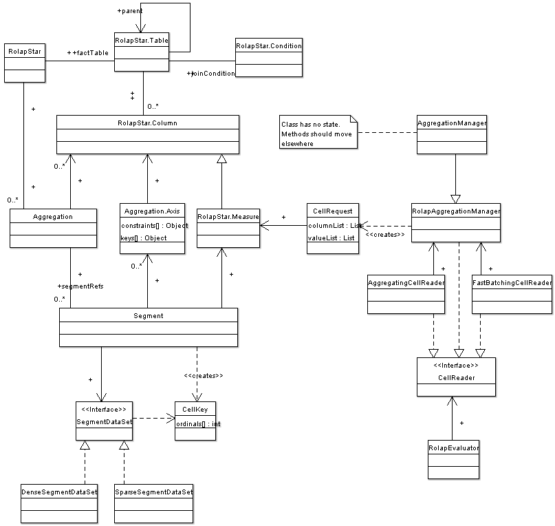

Implements the data access layer for the olap package.
MemberReader
 When a member expression like member.children is evaluated, the function
requests the SchemaReader from the Evaluator. The RolapEvaluator
uses the RolapSchemaReader which delegates most calls to one
of its MemberReaders (one per dimension). In most cases, a SmartMemberReader
will be used, which returns the requested members immediately.
When a member expression like member.children is evaluated, the function
requests the SchemaReader from the Evaluator. The RolapEvaluator
uses the RolapSchemaReader which delegates most calls to one
of its MemberReaders (one per dimension). In most cases, a SmartMemberReader
will be used, which returns the requested members immediately.
CellReader

Cells are evaluated multiple times. For the first time,
a FastBatchingCellReader is used. When a cell is evaluated,
Evaluator.evaluateCurrent() is called. The FastBatchingCellReader
will not compute the cells value but record a CellRequest for that cell
and return (not throw) an exception. After all CellRequests for all cells
have been recorded, the Aggregation will generate SQL to load all cells
with a single SQL query. After that the cells are evaluated again with
an AggregatingCellReader that will return the cell values from the cache.